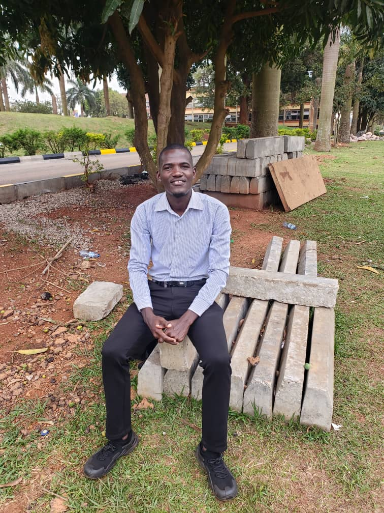
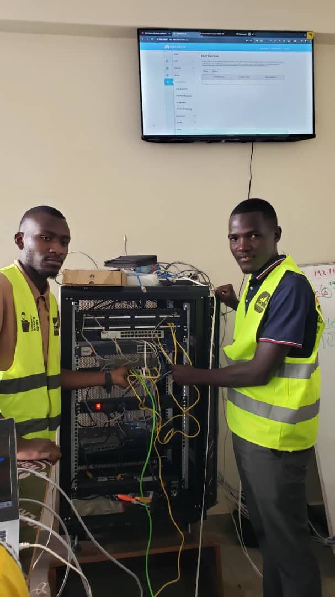
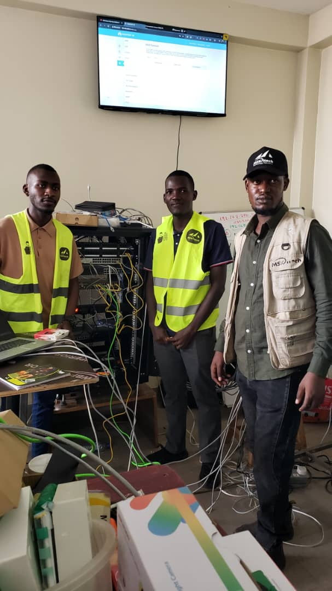

What I Do
I create polished websites, support systems, and creative solutions tailored to real-world needs.
Software Developer • IT Support • Network Enthusiast
I’m Businge Godfrey, a technology-focused professional who combines web development, networking, design, and technical support to help individuals and businesses work smarter.

About Me
I am a passionate technology learner and practitioner with a strong interest in software development, web design, networking, graphic design, and troubleshooting. I enjoy turning ideas into reliable digital experiences and solving practical problems with attention to detail and a service-oriented mindset.
I create polished websites, support systems, and creative solutions tailored to real-world needs.
I aim to build a career in technology where innovation, reliability, and customer value come first.
I focus on clear communication, thoughtful design, and dependable execution from start to finish.
Career Objective
To become a highly skilled and dependable technology professional by combining practical experience, creativity, and problem-solving ability to contribute to impactful digital solutions and business growth.
Education
Kampala International University
MSKITECH Technology Solutions
Technical Skills
Building responsive sites with modern structure and clean user experiences.
Configuring and supporting reliable network setups and basic infrastructure needs.
Creating visual materials that communicate clearly and professionally.
Diagnosing technical issues with a practical and solution-focused approach.
Working with structured data and backend systems for organized applications.
Projects
A clean, modern personal portfolio designed to present skills and projects professionally.
A desktop application focused on organizing student records with dependable data handling.
Designed and configured a secure local network layout using practical networking tools.
Created visuals such as logos, posters, and flyers with a clear and professional style.
Gallery
A visual glimpse of the work, learning, and experiences that continue to shape my professional growth.
Personal portrait and professional identity.

Work centered around IT support and digital solutions.

Hands-on experience and continuous skill building.

Snapshots that reflect my growth and creativity.

Memories from the path toward meaningful technology work.
Internship Experience
Gained hands-on experience in supporting technical tasks, troubleshooting systems, and contributing to digital work that requires accuracy and teamwork.
Certifications
Practical training in building responsive websites and user-facing interfaces.
Training in computer support, maintenance, and reliable system setup.
Achievements
Resume / CV
View a full summary of my education, skills, projects, and experience in a concise CV format.
View ResumeReferences
References are available upon request and can be shared for academic, internship, or professional purposes.
Contact Information
Open to collaboration, freelance opportunities, internships, and professional conversations.